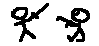

|  |
About Pictorial Consequences
Pictorial Consequences is a multiplayer (minimum 3 players) drawing and describing game. It's a bit like Chinese Whispers, but with pictures. Our version is an computer adaptation of the real life game.
In the real life game, players sit in a circle and each is given a long, thin piece of paper. Each player draws a picture on the top of their piece of paper and hands it to the next player in the circle. The next player then describes what that person just drew. They then fold over the paper so the picture can't be seen, and pass it on again. The player receiving the description must then draw what is being described and the cycle repeats. When the paper runs out, everybody unfurls a piece and laughs at the silliness of it all. Usually the first picture bears no resemblance to the last picture.
The computer version is much the same. However drawing is done with a mouse. This can reduce the artistic flair of some of your Rembrandt friends to childlike scribble. With this sort of handicap the drawings deteriorate very quickly.